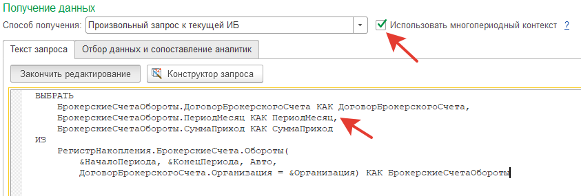
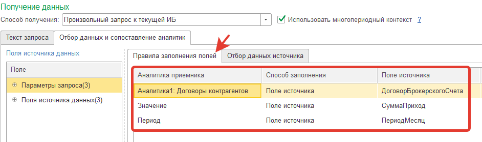

Использование произвольных запросов при расчете значений показателей
В настоящий момент доступны 2 режима расчета показателей с помощью произвольного запроса к ИБ: обычный, в цикле по периодам отчета или в контексте всего многопериодного экземпляра отчета.
Переключение между режимами осуществляется с помощью флага "Использовать многопериодный контекст":
Режим доступен только при использовании расширенного алгоритма пересчета показателей.
При использовании многопериодного контекста запрос выполняется один раз в контексте всего экземпляра отчета. При этом в выходных полях запроса обязательно должно быть поле с типом "Дата", для определения подпериода, в который будет помещена данная строка результата запроса. Период определяется по вхождению даты в конкретный подпериод экземпляра отчета.

Сопоставление выходных полей осуществляется на закладке "Правила заполнения полей". Выходное поле, отвечающее за период, обязательно должно быть сопоставлено с предопределенной аналитикой "Период".

Значения отборов "Дата начала периода отчета", "Дата конца периода отчета" и др. в этом случае интерпретируются как дата начала и дата окончания ВСЕГО экземпляра отчета (а не каждого из входящих в экземпляр отчета подпериодов).
Если многопериодный контекст НЕ используется, то запрос выполняется в цикле для каждого из подпериодов, входящих в экземпляр отчета.
Из-за низкой производительности данный режим рекомендуется использовать только в тех случаях, когда использование многопериодного контекста затруднительно или невозможно. Например, если требуется получать срез последних из регистра сведений для каждого подпериода, входящего в экземпляр отчета.